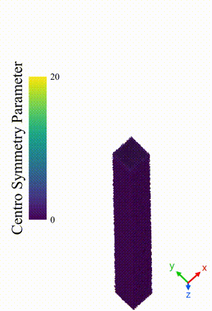
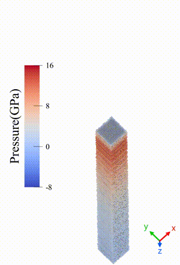
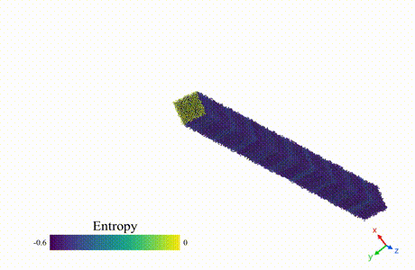

Background


Ultra-fast Laser Ablation
When metals are exposed to high-intensity laser pulses with extremely short durations (femtoseconds to picoseconds), a substantial amount of energy is absorbed within the surface layer. The energy is deposited so rapidly that there is insufficient time for heat to dissipate into the deeper layers of the material, resulting in a steep temperature gradient. The surface material reaches extremely high temperatures and attempts to expand, generating a strong compressive shock wave that propagates into the colder material beneath. This shock wave is followed by a tensile rarefaction wave. The combination of the molten, superheated surface material and the rarefaction wave leads to the high-speed ejection of material, a process known as ablation. The accompanying animation illustrates the propagation of the pressure wave through the surface region and the transient phases identified by computational analysis.
TTM-MD Framework
Irradiating metals with ultra-fast lasers cause the electron and lattice to go in to very transient thermal non-equlibrium due to the vastly different time scale at which they respond to the excitation. The electrons immediately reaches high temperatures after irradiation while the lattice remain relatively cold. Two model the electron and lattice as separate entity during non-equilibrium, a continuum electron domain is considered along with the molecular dynamics description of lattice. The mathematical description of electron-phonon coupling describes the connection between computation at these two scales.

Double Pulse Ablation
Ultrafast lasers are often built to generate pulse in burst mode, that is on activation, multiple pulses are fired on very short intervals. This is more practical for application purposes. So, it is important to know how the ablated material impacts the efficacy of later pulses in removing material as they laser pass through them and some of the materials are redeposited. As MD simulation are very costly for longer simulation, double pulse ablation phenomenon is more feasible setup in studying how laser interacts with ablated plume and affects overall efficiency of material removal. In the animation, when the second pulse interacts with the initially ablated material, it induces complete vaporization, creating a highly disordered and turbulent state within the system. This interaction not only significantly shields the ablated surface from the energy of the second pulse but also causes some of the ablated material to redeposit onto the surface, ultimately affecting the overall efficiency of the burst irradiation process.
Published Works
- Hayder, Md. M., Moumita, T. M., Chowdhury, S., & Rahman, K. A. (2024). Effective electronic properties and coupling for two-temperature model-molecular dynamics simulation of ultrafast laser ablation of nickel. Molecular Simulation, 50(14), 1140–1151. Link